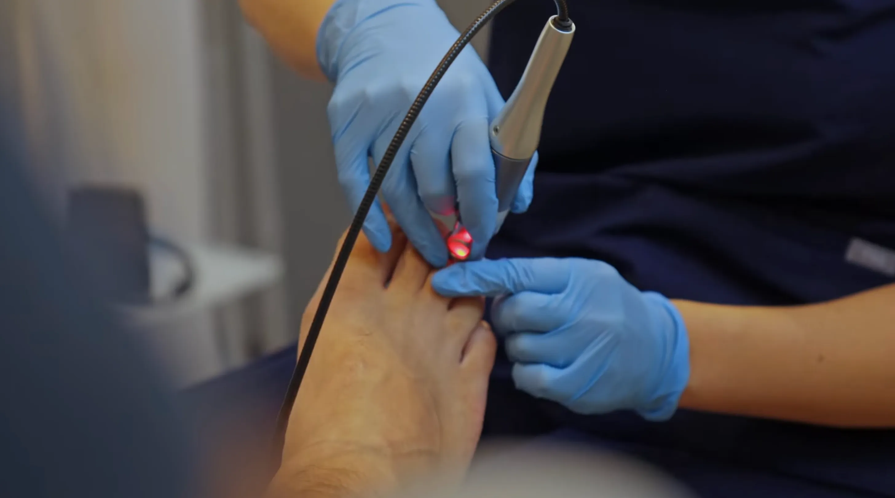
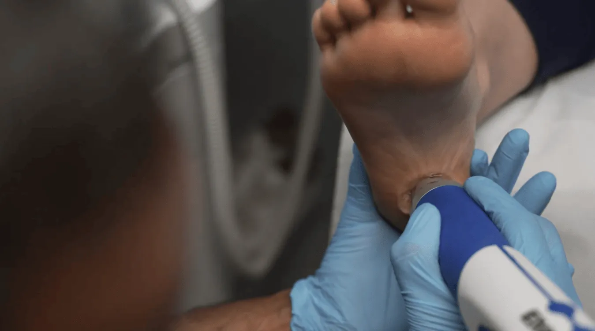

Bring the numbers into one place
No more switching between reports, exports and separate tools to understand the business. The CEO view pulls the key numbers into one place.
Prepared for Hiren, Reena and Alice
Flawless Feet already has strong systems in place, including reporting tools and MedTech automations. This brings the key numbers and the next actions together in one live leadership view, so Hiren and Alice can see what matters, filter what they need, and lead the business with sharper focus.
High-performing clinics often have good systems already. The next level is bringing the critical numbers together so the owner can see the business clearly without running reports in different places.
The real value of the dashboard is not another report. It gives Hiren a weekly, if not daily, operating rhythm: what is growing, what is leaking, which clinic needs attention, which practitioner needs support, and where the next constraint is.
No more switching between reports, exports and separate tools to understand the business. The CEO view pulls the key numbers into one place.
Revenue, utilisation, rebooking, cancellations and missed opportunity sit together, so Hiren and Alice can see what needs attention first.
Lead flow, conversion, capacity, rebooking, referrals or practitioner utilisation: the dashboard helps identify the one bottleneck to fix next.
Alice gets a clear management view, the team can focus on the priorities that matter, and Hiren gets fewer surprises.
Flawless Feet may already have many of these systems in place, including Dataplayer-style reporting. The dashboard does not replace what is working. It connects the numbers to a leadership rhythm and to MedTech actions, so Hiren and Alice can see where momentum is building and where the team should focus next.
Track where new patients are coming from: word of mouth, SEO, professional referral, community partnerships, social and local campaigns.
Measure phone conversion, online booking accuracy and which enquiry types need human confirmation before they become lost revenue.
Separate attempted reminders from actual confirmations, then flag high-value bookings that need a live call before they become DNAs.
Track whether the right next appointment was recommended, booked and completed, so care plans do not drift into “see how you go”.
Optional future layer: use AI notes or consult summaries to spot training themes, rebooking script gaps and patient communication opportunities.
Hive teaches utilisation as one of the clearest measures of how full each practitioner’s diary really is. Too high and the team risks burnout. Too low and there is capacity to grow. The dashboard turns that into a live management signal.
Available time excludes training, breaks, meetings, administration and strategic work, so the number is fair and useful.
Practitioners may be overloaded. Time to review support, scheduling, recruitment or service mix.
The diary has room to grow. Time to focus lead generation, conversion or reactivation activity.
See which services are in demand, which practitioners are underused and where capacity should be promoted.
Spot repeat bottlenecks that need documenting into SOPs so the team can deliver the same standard without Hiren.
The Hive diary-filling framework is not about throwing money at more tech. It is about making better use of the patients, goodwill and relationships already inside the practice. The CEO dashboard gives Flawless Feet a live view of those opportunities and who owns the next action.
Live lists of patients not seen for 6-12 months, 12-24 months and 2+ years, so the team knows the exact size of the comeback opportunity.
Money lever: bring past patients back before paying for new ones.Track rebooking rate by practitioner, treatment and clinic, so the team can see where patients are leaving without a next appointment.
Money lever: turn one-off appointments into predictable future bookings.Measure patient, professional and partner referrals, so the best referral sources are visible and can be acknowledged properly.
Money lever: grow from trust already built in the community.The dashboard is not just there to look clever. It shows where revenue is being missed in real time, which existing MedTech automations are already doing their job, and where Alice should focus next.
See missed calls, chat leads, online bookings and price-led enquiries that have not turned into the right appointment, then measure whether the existing recovery process is converting them.
Spot patients due for routine care, orthotics checks, fungal nail follow-ups or treatment plan completion, including segmented reactivation lists.
See which high-value treatments are moving, which clinics need support and where MedTech campaigns should focus next.
Track utilisation, confirmations, cancellations and rebooking so capacity is used well before more marketing spend is added.
If Flawless Feet are already using Dataplayer, that is a strength. It proves Hiren values good reporting. But Hiren does not need two dashboards doing the same job. If we can access the Cliniko data directly, this build can produce reports, graphs, filters and treatment audits itself, while also linking the findings back into MedTech.
The real win is not just a better-looking graph. It is giving the practice manager fast answers to operational questions that currently take too much digging, exporting or manual checking.
“Show me every patient who had a SWIFT appointment this month, then tell me which of them does not have a future appointment booked.”
This is the clinician-owner view: not just how busy the practice is, but where the profit is coming from, where it is being lost, and what needs changing. Reports can be visual, filterable and comparable across daily, weekly, monthly and yearly views.
Filter by clinic, practitioner or treatment to see whether the pattern is driven by demand, diary structure, pricing or service mix.
Compare appointment value, rebooking rate, DNA rate and treatment mix by hour, so the best diary slots are used properly.
Flawless Feet already has demand, systems and automations. The next level is knowing exactly which part of the business model is creating profit, which part is leaking it, and which constraint should be fixed next.
Which treatments generate the best gross profit, not just the most appointments? Compare revenue, clinician time, room time, consumables and follow-up demand.
Which practitioner, treatment, day and location produces the strongest return for each available billable hour?
Are patients completing the recommended pathway, or is revenue leaking after appointment one, two or three?
Is the diary full of the right work, or just full? Separate profitable clinical time from low-value or poorly matched appointments.
Which clinic has underused capacity, which services should be promoted where, and which branch is carrying the best margin?
Not all new patients are equal. Track which sources bring patients who rebook, complete care plans, leave reviews and refer others.
Google reviews, 3/6/9-month reactivation and follow-up workflows already exist. The dashboard shows booked appointments, revenue recovered and conversion by flow.
Is the bottleneck demand, conversion, capacity, pricing, rebooking, treatment completion, clinician availability or management bandwidth?
Alice already sees the value in Dataplayer and the current MedTech setup. The opportunity is to make the data more practical: searchable, filterable, linked to treatment types, and easy to turn into a management action.
Cliniko can make this awkward because the team may need to download a large dataset and filter it manually. The dashboard should let Alice search directly by appointment or treatment type.
Example: pull the last six months of SWIFT appointments, check outcomes, see whether verrucas resolved, and identify patients without the right next appointment.
Flawless Feet still produces a monthly Hive-style scoreboard. This build can make that faster, clearer and more visual, with the key numbers already assembled.
If a month looks good overall but rebooking is weak, the dashboard should make that obvious and show where the leak is: treatment, practitioner, location or patient group.
Alice wants to know whether MedTech chats, voicemails and missed-call conversations are turning into appointments. A useful layer would show where each conversation came from, whether it was handled, whether a Cliniko appointment was booked afterwards, and which contacts still need a human follow-up.
Weekends and long weekends can leave Hiren carrying patient contact because reception is not covered. Rather than rushing voice AI, we can map safer options: triage, forms, missed-call capture and next-working-day booking queues.
Clean enough for a quick check-in. Detailed enough to filter by day, week, month, year, location, treatment, practitioner or follow-up status without waiting for a manual monthly report.
If Hiren wants different metrics measured, we can build those in. As long as we can access the data from Cliniko, Dataplayer outputs, MedTech, files, spreadsheets or other connected tools, we can shape the scorecard around the numbers he actually uses to scale and lead the business.



Flawless Feet already has MedTech automations for Google reviews, reactivation and follow-up. This dashboard does not resell those. It measures the commercial impact: what triggered, what converted, what booked, what recovered revenue, what stalled, and what needs human attention.
Cliniko, Dataplayer outputs, MedTech, spreadsheets and other accessible sources can be mapped into one clean reporting and audit structure.
See what is growing, what is leaking, where capacity sits, which clinic needs support and which workflow is creating revenue.
See the return from existing Google review, 3/6/9-month reactivation and follow-up workflows by clinic, treatment, practitioner and patient segment.
Instead of guessing, Alice can see which opportunities need a call, which automations need refining and which services deserve attention today.
This is designed as a relationship-friendly upgrade because Flawless Feet already pays a monthly MedTech retainer. The point is simple: make the owner look and feel sharper by giving him the numbers he needs to lead, scale and manage the business in one place.
Normally, this sort of reporting and business intelligence infrastructure would be several thousand pounds. For Flawless Feet, we would include a complimentary second dashboard because you are already ahead of the game, you have been early adopters, and we would love this to become a showcase piece.
For Hiren and ownership-level decisions: revenue, utilisation, cash/profit signals, clinic performance, high-value services, current constraint and the KPIs that show how the business is really moving.
For Alice and day-to-day management: enquiries, booking accuracy, confirmations, rebooking gaps, patient-flow leaks, treatment audit reports, MedTech workflow performance and the priority actions that need attention today.
A one-off build fee for the CEO Dashboard plus a complimentary Practice Manager Dashboard, connected to the current MedTech support relationship. This is designed to complement any reporting already in place, including Dataplayer, and turn the key numbers into clearer leadership actions. No extra monthly dashboard fee while Flawless Feet remains on the current MedTech retainer.
50% deposit on acceptance, with the balance due on delivery. Includes the CEO Dashboard and complimentary Practice Manager Dashboard for early-adopter Flawless Feet.
Accept the two-dashboard buildThe dashboard structure is based on Flawless Feet’s three-clinic model, published service mix and booking routes, plus Hive Practice guidance around KPIs such as revenue, net profit, cashflow, new patients, average sale, utilisation, rebooking, patient experience, process documentation and business intelligence.